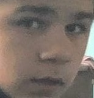

Здесь вы сможете ознакомится с моими работами, а так же найти мои контактные данные.
Здравствуйте, меня зовут Сергей Шаповал. Мне 17 лет. Я учусь на 3 курсе по специальности ИПЗ.
Здесь я написал какой-то текст. Не знаю зачем, но надо.
Телефон:
+380964744884
E-mail:
shapoval.sergey@gmail.com